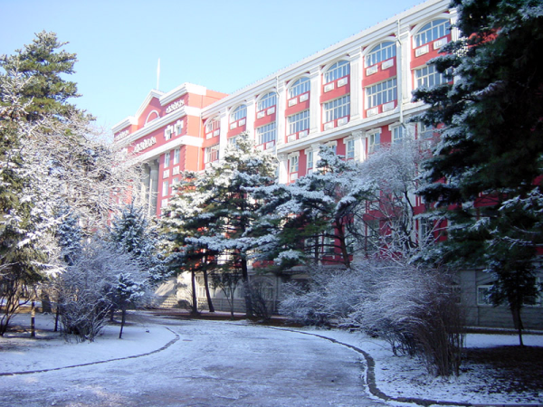
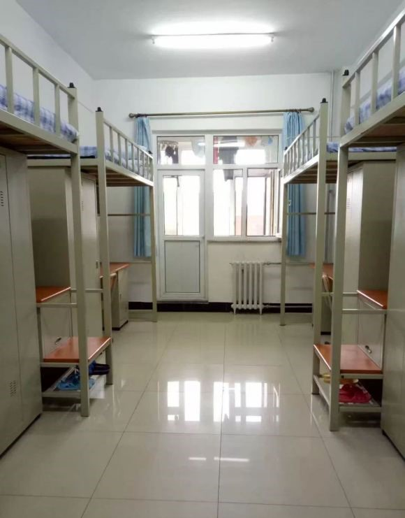

Hello! It's Min. I am enrolled in a 2+2 program between Portland State University and Changchun University of Technology. I would like to introduce my university in China. As you can see, the first two pictures are two different campuses of my university. Unlike American universities, we only have one campus. Different majors will study on different campuses. The third picture is our university dormitory. Our dormitory can live up to four people, and some dormitories can also live up to six people, depending on your major. Doesn't it sound weird? Our dormitory is only about 215 square feet, but 4-6 people live in it. Unlike American dormitories, most dorms in China do not have kitchens, bathrooms and living rooms.
 As for me, studying abroad is a challenging decision. It is the first time to come to study and live in a strange country. A few days before coming to the United States, I suffered from insomnia almost every day. I was extremely excited and nervous, worried about whether I could adapt to life abroad. I took a 13-hour flight from Beijing to San Francisco, then transferred to Portland. As soon as we got off the plane, a teacher would come to pick us up. At that time, I felt that I was not very alone. In the rest of my life, I also gradually adapted to my study and life in Portland. The teachers and classmates here are very enthusiastic, and I have a real sense of the local American culture. But with the arrival of new coronary pneumonia in 2020, my life has changed again. My parents in China worry about me every day, so I have to buy expensive air tickets to go back to China for online classes. Now I have been taking online classes in China for a year, but I miss my life in the United States every day. I long to return to the United States to live a normal campus life. I hope to travel to other cities in the United States. I used to experience the culture of different parts of the United States in movies, and I really liked the local people's love for freedom of life. I hope that the epidemic will end soon and I can realize my wish to travel in the United States sooner.